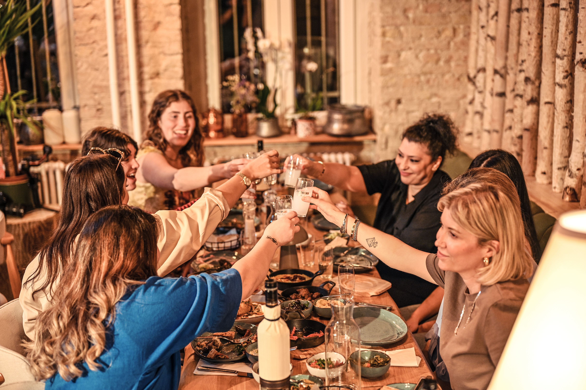
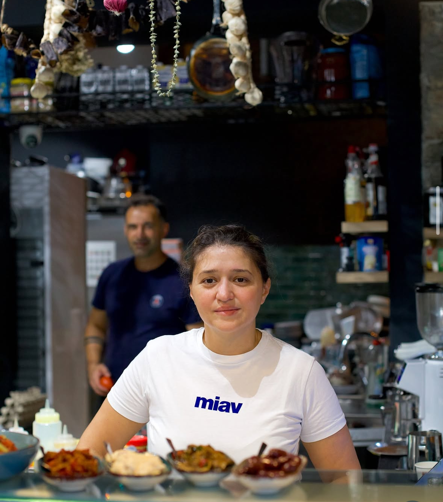

Text TBA

In der türkischen Kultur ist der Uzun Masa (der „lange Tisch“) weit mehr als nur ein Möbelstück – er ist das lebendige Herzstück der Gemeinschaft. An diesen langen Tisch verschmelzen Generationen, um das Leben zu teilen, gemeinsam zu lachen, zu weinen und tiefe, herzliche Gespräche bis spät in die Nacht zu führen. Hier werden Fremde zu Freunden und Familien rücken enger zusammen. Je mehr Menschen sich um ihn versammeln, desto schöner und reicher wird das Leben.